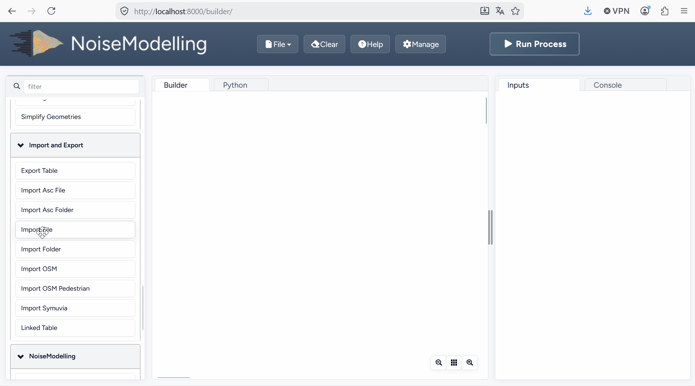
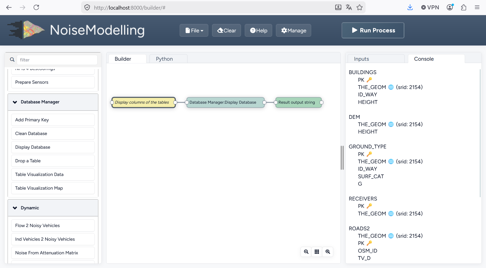
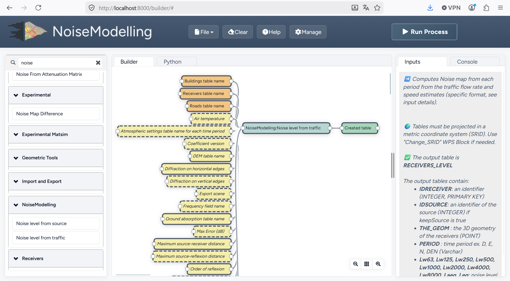
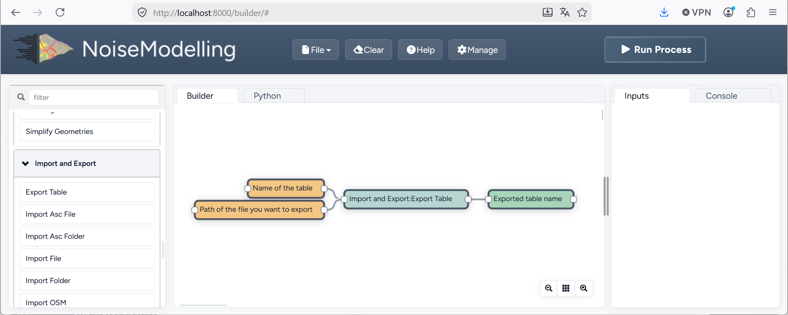
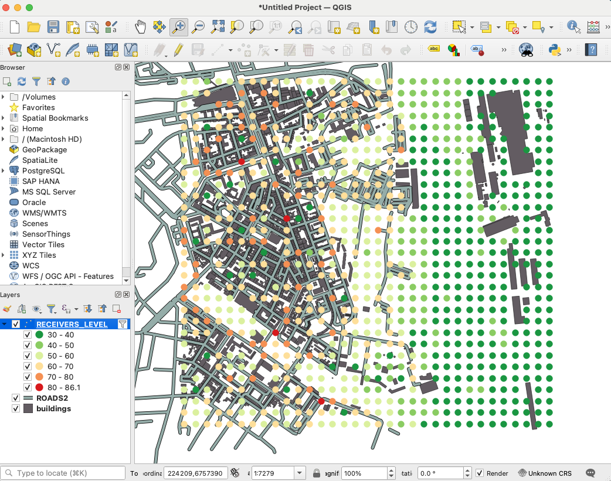
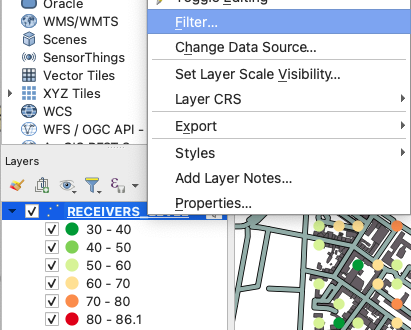
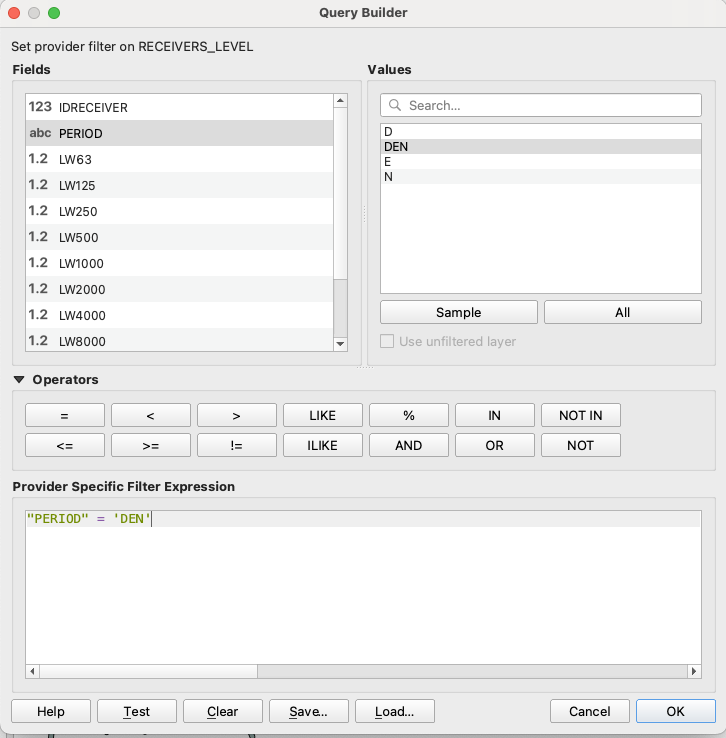
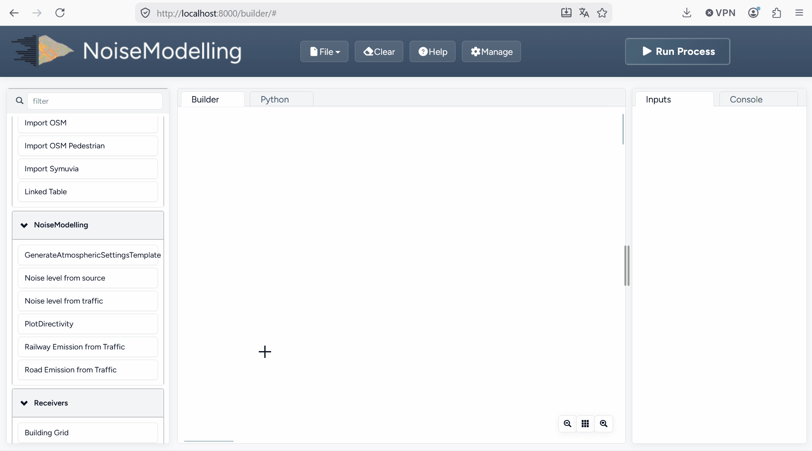

Get Started - GUI
Below we present a simple example to help you discover NoiseModelling through its Graphical User Interface (GUI).
Step 1: Open NoiseModelling
See Step 3: Start NoiseModelling GUI in the Installation guide.
Step 2: Load input files
To compute your first noise map, you need to load input geographic files into the NoiseModelling database.
In this tutorial, we have 5 layers, zoomed in on the city center of Lorient (France): Buildings, Roads, Ground type, Topography (DEM) and Receivers.
In the resources/ sub-folder of the NoiseModelling installation, you will find all the data that will be used in the tutorials.
You will import these layers into your database using the Import File Blocks.
Drag the
Import FileBlock into the Builder windowSelect the
Path of the input Filebox and enterresources/buildings.shpin thepathFilefield (on the right-side column)Then click on
Run Processafter selecting one of the input/output boxes of your process

Repeat this operation for the 4 other files:
resources/ground_type.shpresources/receivers.shpresources/ROADS2.shpresources/dem.geojson
Files are uploaded to the database when the Console window displays the name of the layer.
Note
If you get the message
Error opening database, please refer to the note in Step 2: Download NoiseModelling in the Installation guide.The process is supposed to be quick (<5 sec.). In case of a timeout, try restarting NoiseModelling (see Step 3: Start NoiseModelling GUI in the Installation guide).
Orange Blocks are mandatory
Beige Blocks are optional
If all input Blocks are optional, you must modify at least one of these Blocks to be able to run the process
Blocks get a solid border when they are ready to run
Read the Builder page for more information
Once done, you can check whether the tables were correctly imported into the database. To do so, drag/drop and execute the Display_Database Block (in the “Database_Manager” section). You should see on the right panel the table list (and their columns if you checked the option in the Display columns of the tables Block).
{kind=link}

Step 3: Convert road traffic into noise emission sources lines
The first step is to convert the traffic information on the roads to noise levels (vehicles per hour to an average value in dB)
Drag & Drop the Road Emission from Traffic Block into the Builder window.
Enter the name of the corresponding table in your database:
Roads table name:
ROADS2This table contains the road geometries with traffic data for day, evening and night
When ready, you can press Run Process.
As a result, the table LW_ROADS will be created in your database. This table contain the noise emission of your roads. The next step will run a simulation of the noise propagation to the receivers position.
Step 4: Run Calculation
To run the calculation, drag the Noise_level_from_sources Block into the Builder window.
Then, select the orange Blocks and enter the name of the corresponding table in your database:
Building table name:
BUILDINGSSource table name:
LW_ROADSThis table contains the road geometries with the noise emission values for day, evening and nightReceivers table name:
RECEIVERSLocations where noise levels are evaluatedDEM table name:
DEMDigital elevation modelGround absorption table:
GROUND_TYPENature of the groundDiffraction on horizontal edges:
☑check it (sound propagation goes over buildings)Maximum source-receiver distance: set
2000meters (do not look for sound sources further than 2 km)Order of reflection: set
0to disable it (faster but less accurate)
The beige Blocks correspond to optional parameters (e.g. DEM table name, Ground absorption table name, Diffraction on vertical edges, …).
When ready, you can press Run Process.

As a result, the table RECEIVERS_LEVEL will be created in your database. This table corresponds to the noise levels computed at receiver points. The column PERIOD corresponds to the 4 different periods of the day (D, E, N and DEN).
Step 5: Export (& see) the results
You can now export the output tables (one by one) in your preferred export format using the Export_Table Block, giving the path of the file you want to create.
Warning
Don’t forget to add the file extension (e.g. c:/home/receivers_level.geojson or c:/home/receivers_level.shp). (Read more info about file extensions here: Tutorials - FAQ)

For example, you can export the tables in .shp format. This format can be read with most GIS tools such as the free and open-source QGIS and SAGA software.
Note
For those who are new to GIS and want to get started with QGIS, we advise you to follow this tutorial.
To obtain the following image, use the styling options in your GIS and assign a color gradient to the LAEQ column of your exported RECEIVERS_LEVEL table.

To display the result for a specific period, filter the rendering by the field PERIOD in QGIS.

Popup menu

Filter window
Tip
Now that you have made your first noise map (congratulations!), you can try again by adding or changing optional parameters to see the differences.
Step 6: Know the possibilities
Now that you have finished this introduction tutorial, take the time to read the description of each of the Blocks available in your NoiseModelling version.
By clicking on each of the inputs or outputs, you will find a lot of information.
